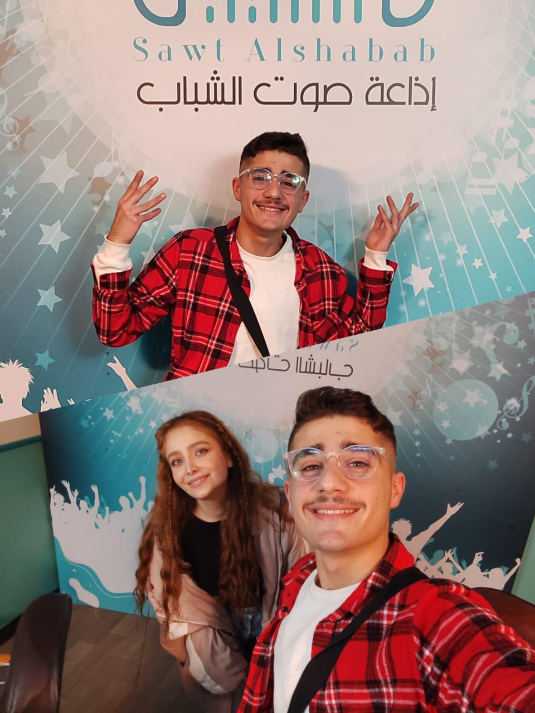
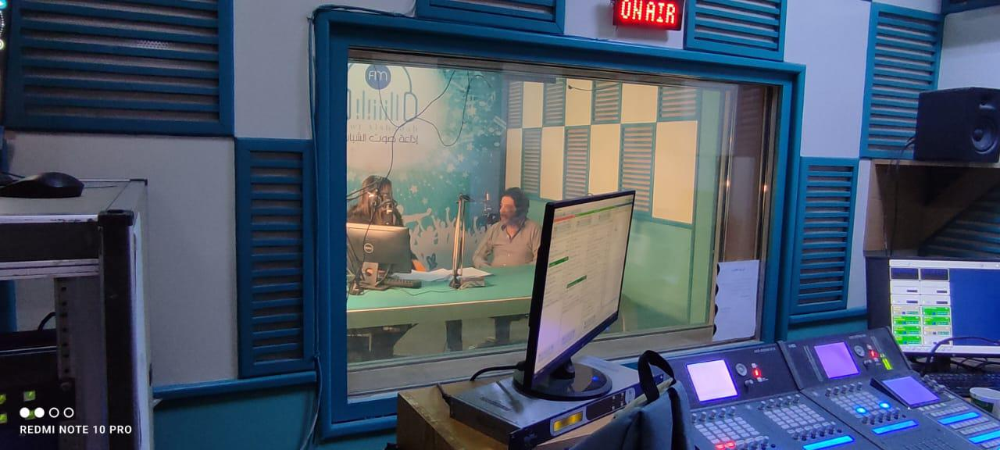
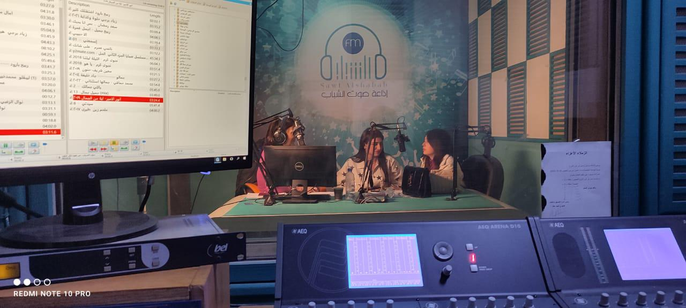
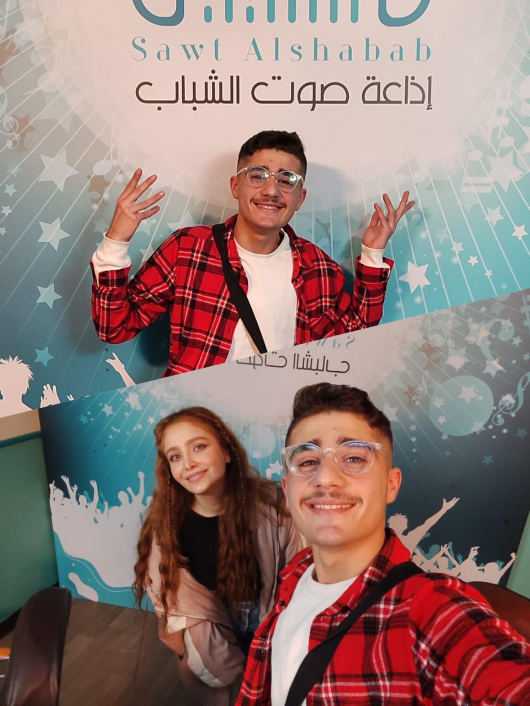
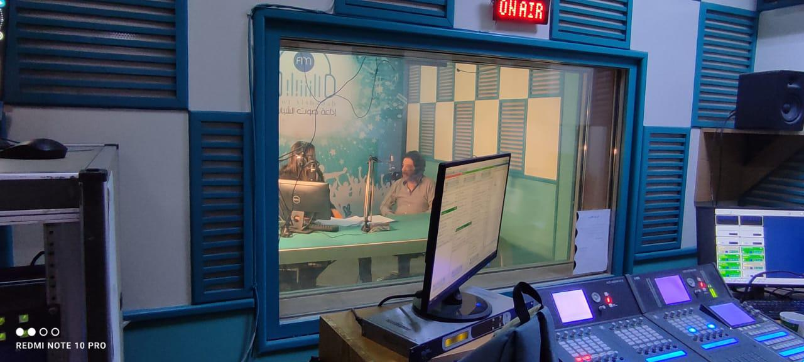
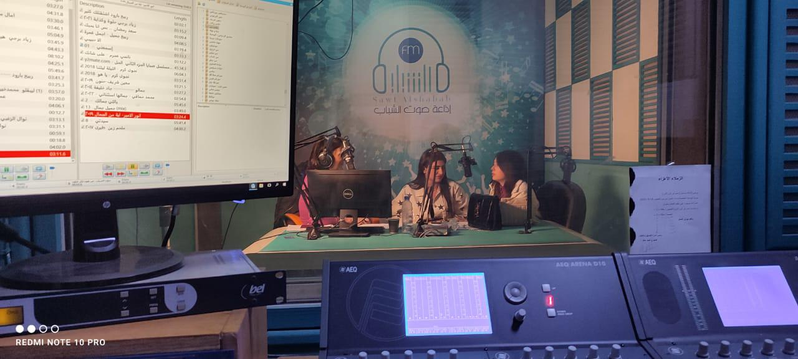

Media Producer & Journalist
+971 50 457 3341
Abu Dhabi, United Arab Emirates
raghad.jpoor@gmail.com
Accomplished Media Producer and Journalist with over 5 years of experience in radio broadcasting and professional media production. Specialized in crafting compelling narratives and driving impactful content that resonates with diverse demographics. Expert in storytelling, public speaking, and managing high-profile cultural interviews.
 





Native
Professional
Professional
Radio Sawt Alshabab | General Authority for Radio and Television
Dream Land Kindergarten & Private Instruction
Henkel
Conducted and moderated a professional radio interview with actor Houssam Al Shah on “The Goat” at Al-Hamra Theater in Damascus, delivering culturally insightful and analytically structured coverage.
Watch on YouTubeConducted and moderated a professional radio interview with director Zain Tayyar of “The Goat” at Al-Hamra Theater in Damascus, exploring the directorial vision and artistic framework within a culturally analytical perspective.
Watch on YouTubeManaged and executed professional audio recording for all interviews related to “The Goat”, ensuring optimal sound quality, technical control, and broadcast-ready material suitable for professional archiving.
Watch Full VideoA professional interview with actor Majd Mghammas discussing his role in “Al-Bab” at Al-Qabbani Theater in Damascus, highlighting character depth and the artistic experience within the play’s dramatic context.
Watch on YouTubeA journalistic conversation with actress Raghad Salim about her experience in “Al-Bab” at Al-Qabbani Theater in Damascus, focusing on her interpretation of the character, preparation process, and the play’s impact on her theatrical journey.
Watch on YouTubeDelivered clear and precise audio recordings for all interviews related to “Al-Bab” at Al-Qabbani Theater in Damascus, ensuring high sound quality and media-ready archival material.
Watch Full VideoMedia coverage of the dual art exhibition “Hattan” by visual artists Ali Naffanouf and Adnan Ayoub at the Cultural Center in Damascus, highlighting the visual vision and artistic dialogue.
Watch on YouTubeProfessional interview with director Najdat Anzour during the premiere of “The Broken Cross” at Damascus Opera House, discussing directorial vision and thematic messages.
Watch Part 1Interview with art director Yazan Najdat Anzour, focusing on the film’s visual identity and cinematic aesthetics supporting its narrative in “The Broken Cross”.
Watch Part 2Interview with Nazir Awad, Director-General of Antiquities and Museums, regarding the creative children’s booklet introducing Syrian heritage at the National Museum of Damascus.
Watch on YouTubeInterview with a winning child of the Arab Reading Challenge at Damascus Opera House, highlighting the impact of reading on personal development.
Watch on YouTubeOct 2019 — Jul 2020
BA of Russian Literature
Damascus University, Syria
Oct 2022 — 2024
BA of Media
Damascus Virtual University, Syria
Jun 2022 — Jul 2022
Body Language at Alfaisal University
May 2022 — Jul 2022
NLP at Alfaisal University
Apr 2020 — May 2020
I speak Russian at Tomsk State University